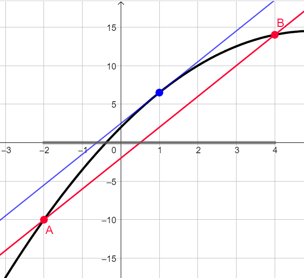
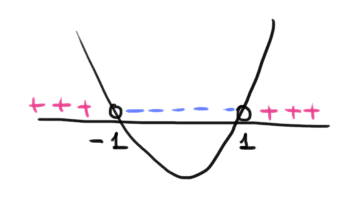

Sia \(y = f(x)\) una funzione definita su un intervallo \([a\,,\,b]\)
\(\boldsymbol{1})\,\,\) continua su un intervallo \([a\,,\,\,b]\).
\(\boldsymbol{2})\,\,\) derivabile in \((a\,,\,\,b)\)
Allora \(\exists c \in (a\,,\,b)\) tale che
\[
f'(c) = \dfrac{f(b) - f(a)}{b -a}
\]
Osservazione
Il teorema di Rolle è un caso particolare di quello di Lagrange.
Le ipotesi \(\boldsymbol{1)}\) e \(\boldsymbol{2)}\)
sono le stesse.
Per il teorema di Lagrange sappiamo che \(\exists x \in (a\,,\,b)\) tale che
\[
f'(c) = \dfrac{f(b) - f(a)}{b -a}
\]
Aggiungendo l'ipotesi \(\boldsymbol{3)}\) di Rolle, ovvero che \(f(a) = f(b)\), possiamo sviluppare il calcolo
\[
f'(c) = \dfrac{f(b) - f(a)}{b -a} = \dfrac{0}{b -a} = 0
\]
ovvero esiste (almeno) un valore \(c\) interno all'intervallo tale che la derivata si annulli: precisamente
la tesi del teorema di Rolle.
Interpretazione grafica
Interpretiamo cosa afferma il teorema
Dimostrazione
Per la dimostrazione del teorema fate rifermento al libro di testo: pagg. 1694 e 1695.
Esercizio 1
Svolgere l'esercizio n° 124 pag. 1715
Studiare l'esecizio guida n° 125 pag. 1715
Svolgere gli esercizi n° 133, 135, 136 pag. 1716
Svolgimento n° 133
Mostriamo che la funzione
\[
f(x) = -\dfrac{1}{2}x^2 +5x +2
\]
soddisfa le ipotesi del teorema di Lagrange nell'intervallo \([-2\,,\,4]\).
Prima di tutti studiamo il suo dominio, continuità e derivabilità.
Dominio, continuità, derivabilità
La funzione \(f\) è polinomiale, il suo dominio è \(D = \mathbb{R}\), in esso è ovunque continua e derivabile.
La sua derivata è
\[
f'(x) = -x +5
\]
Verifica delle ipotesi
Le ipotesi \(\boldsymbol{1)}\) e \(\boldsymbol{2)}\) sono soddisfatte. Infatti abbiamo mostrato che la funzione \(f\) è continua e derivabile su \(\mathbb{R}\).
In particolare lo sarà su \([-2\,,\,4]\), che è contenuto in \(\mathbb{R}\).
Il teorema di Lagrange ci assicura che vale la proprietà affermata in tesi, ovvero esiste (almeno) un valore \(c \in (-2\,,\,4)\) tale che
\[
f'(c) = \dfrac{f(4) -f(-2)}{4 - (-2)}
\]
Per trovare quale sia questo valore risolviamo l'equazione nell'incognita \(c\), che per nostra serenità psicologica
ribatteziamo con l'etichetta \(x\), come tutte le incognite del mondo:
Nell'immagine che segue vediamo l'interpretazione grafica del teorema:
in corrispondenza dell'intervallo \((-2\,,\,4)\) esiste una tangente al grafico parallela la retta passante per i punti del grafico \(f\)
di ascissa \(x = -2\) e \(x = 4\)

Svolgimento n° 135
Mostriamo che la funzione
\[
f(x) = \left|x^2 - 1\right|
\]
soddisfa le ipotesi del teorema di Lagrange nell'intervallo \([2\,,\,3]\).
Prima di tutti studiamo il suo dominio, continuità e derivabilità.
Dominio, continuità
La funzione \(f\) è composizione del modulo e di un polinomio, il suo dominio è \(D = \mathbb{R}\), in esso è ovunque continua.
Derivabilità
Calcoliamo la derivata di \(f\)
\(\Big|x^2 - 1\Big|' = \)
La funzione è composta. Evidenziamo la funzione più interna.
La derivata della funzione è
\[
f'(x) = \dfrac{\Big|x^2 - 1\Big|}{x^2 - 1} \cdot 2x
\]
Individuiamo il suo dominio. Nell'espressione analitica di \(f'\) è presente una frazione. Imponiamo la condizione
\[
x^2 - 1 \neq 0 \,\,\Rightarrow\,\, x^2 \neq 1 \,\,\Rightarrow\,\, x = \pm 1
\]
L'insieme di derivabilità è
\[
D' = (-\infty\,,\,\,-1) \cup (-1\,,\,\,1) \cup (1\,,\,\,+\infty)
\]
Rispetto all'insieme dove la funzione è continua abbiamo "perso" i valori \(x = \pm1\)
Verifica ipotesi del teorema in \(\boldsymbol{[2\,,\,3]}\)
L'intervallo \([2\,,\,3]\) è contenuto in \(\mathbb{R}\), dove la funzione è continua. Segue la continuità di \(f\)
in \([2\,,\,3]\). L'ipotesi \(\boldsymbol{1)}\) è soddisfatta.
L'intervallo \((2\,,\,3)\) è contenuto in \(D'\), dove la funzione è derivabile. Segue la derivabiltà di \(f\)
in \((2\,,\,3)\). L'ipotesi \(\boldsymbol{2)}\) è soddisfatta.
Poiché sono verificate per \(f\) le ipotesi del teorema di Lagrange, segue la tesi, ovvero esiste (almeno) un valore \(c \in (2\,,\,3)\)
tale che
\[
f'(c) = \dfrac{f(3) - f(2)}{3 - 2}
\]
Per trovare il valore in questione, risolviamo l'equazione scritta sopra nell'incognita \(c\), che rietichettiamo con
il nome di \(x\).
Un'osservazione prima di immergerci nei calcoli.
La funzione
\[
\dfrac{\Big|x^2 - 1\Big|}{x^2 - 1}
\]
ci restituisce
come output \(+1\) se il segno del polinomio \(x^2 -1\) è positivo, \(-1\) se è negativo. Con il metodo della
parabola vediamo che il segno di \(x^2 - 1\) è

Dalla tesi del teorema sappiamo che \(x \in (2\,,\,3)\). In corrispondenza di tale intervallo il segno di
\(x^2 - 1\) è positivo, quindi \(\frac{\Big|x^2 - 1\Big|}{x^2 - 1} = +1\).
\[
\begin{align*}
&f'(x) = \dfrac{f(3) - f(2)}{3 - 2}
\\\\
&\dfrac{\Big|x^2 - 1\Big|}{x^2 - 1} \cdot 2x = \dfrac{ \left|3^2 - 1\right| - \left|2^2 - 1\right|}{1}
\\\\
& +1 \cdot 2x = \left|8\right| - \left|5\right|
\\\\
&2x = 3
\\\\
&x = \dfrac{3}{2}
\end{align*}
\]
Il valore che soddisfa la proprietà della tesi è \(x = \dfrac{3}{2}\).